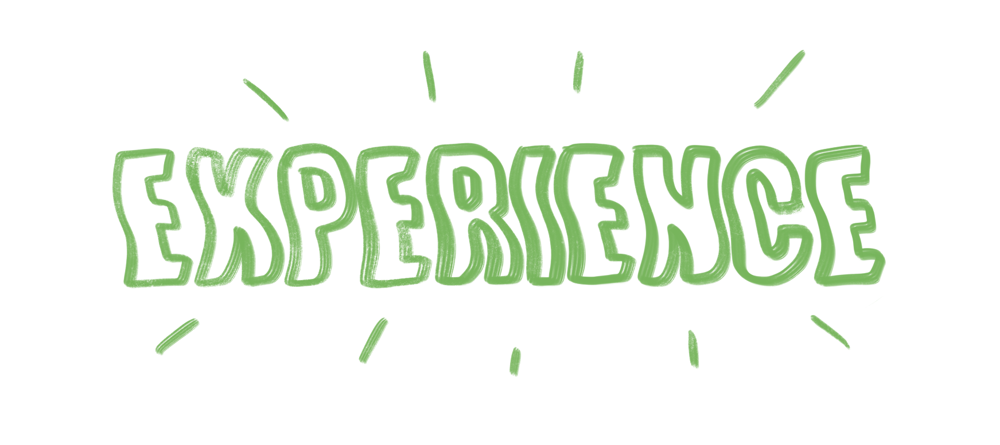

My Experience
In 2017, I took 9 subjects during SPM. At that time, I was really hoping that I can studying at Universiti Teknologi Mara (UiTM). The next year after completing all my exams, the result was released. It was the happiest moment ever when I achieved 5A, 3B+ and 1C. To be honest, I was not the target student to achieve the best result when I was at school. But the mean time the result was released, I can proudly prove to my parents, teachers and friends that I could succeed.
Early of July 2017, I got an offer from UiTM Merbok in Kedah. It was exciting when the course stated in the offer letter was my dream before. The course that I would registering was Diploma in Library Management. Back then, my family was very proud of me. Finally, my dream and ambition has become true.
On the day of registration, I was so thrilled and nervous. I came along with my family from Negeri Sembilan. Even though the ride took 7 hours to reach, it was priceless moments when I see the environment was so stunning and exciting.
It was a sweet experience for me because for me, I had achieved my dream of entering Uitm. However, for me the struggle has to begin. Because of that, my journey is still long and there is a lot to learn. I hope to someday wish to become a lecturer in my field. Hopefully I will continue to seek knowledge until now. Thank you!